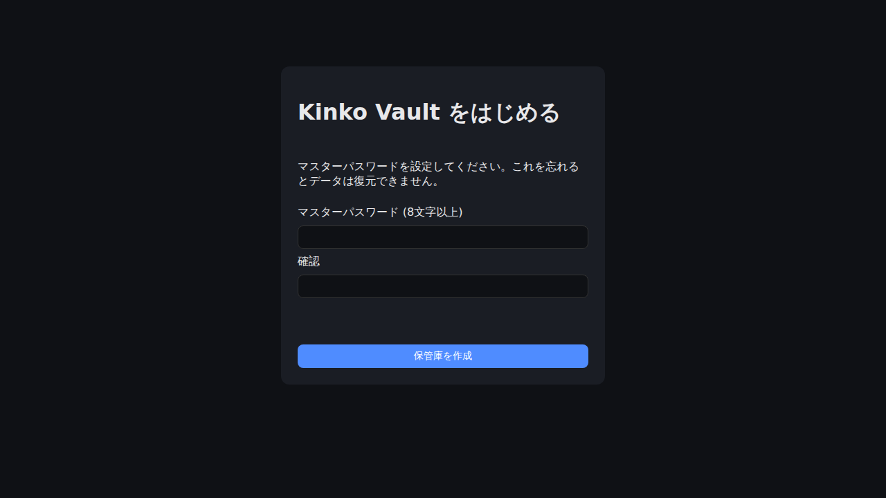
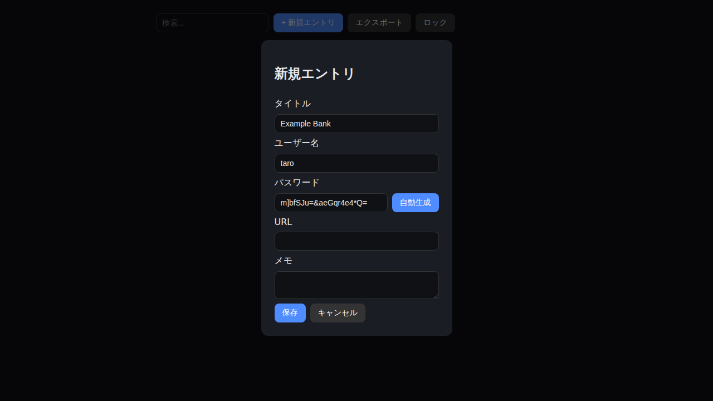
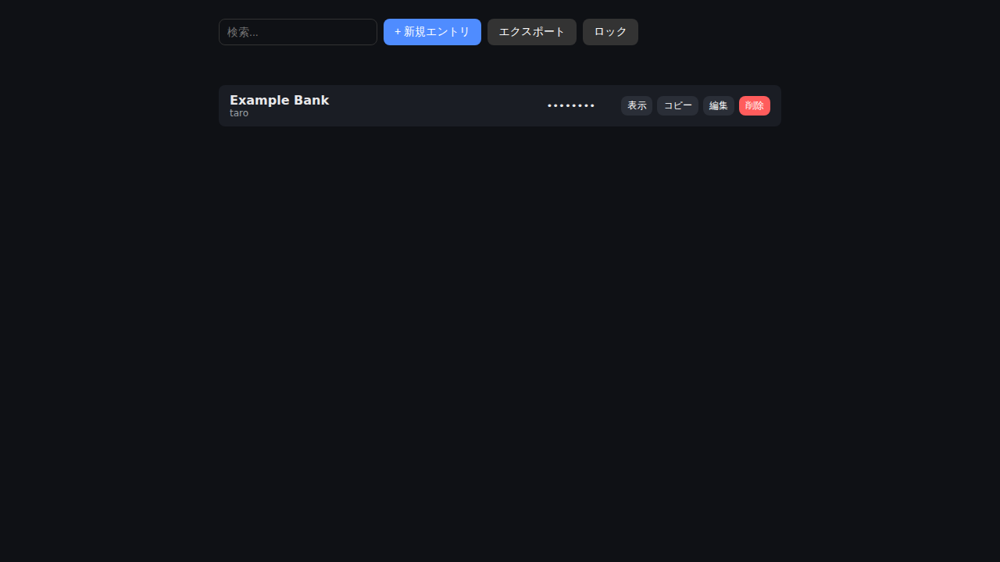
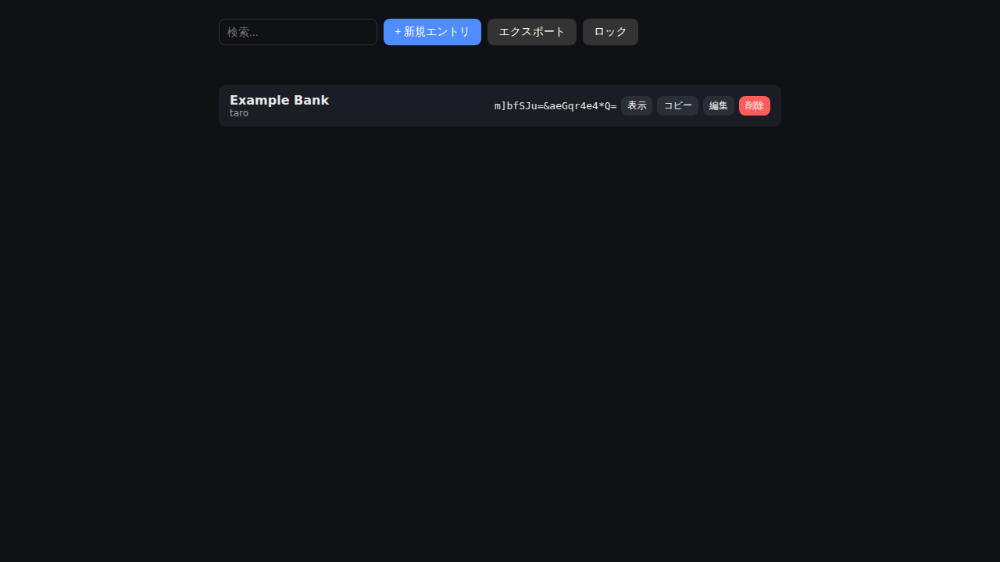

目次を開く
Kinko Vault（キンコ・ヴォルト）は、パソコンやスマホのブラウザだけで動く、鍵のかかったデジタル金庫です。銀行やお店のIDとパスワードを、この中にしまっておくことができます。
インターネットには一切つながらず、しまった情報はあなたの端末の中だけに残ります。この説明書では、専門知識がなくても迷わないように、ひとつひとつの操作を順番に説明します。
01これは何のソフト？
まず、Kinko Vaultが何をしてくれるのかを、たとえ話で説明します。
ふだん私たちは、いろいろなサイトやアプリのために、たくさんのID・パスワードを使っています。それを覚えておくのは大変ですし、紙に書いておくのも紛失や盗み見の心配があります。
Kinko Vaultは、そうしたID・パスワードを1か所にまとめてしまっておける「デジタルの金庫」です。金庫を開けるための鍵にあたるのが、あなたが最初に決める「マスターパスワード」ひとつだけです。マスターパスワードさえ覚えておけば、あとは金庫の中にいくつでもパスワードをしまえます。
ふつうのパスワード管理アプリと何がちがうの？
世の中の多くのパスワード管理サービスは、あなたの情報を会社のサーバー（クラウド）に預けます。Kinko Vaultは預けません。情報はすべて、あなたが今使っているブラウザの中だけに保存され、外部に送信されることは一切ありません。そのぶん、バックアップ（⑦章）はご自身で行っていただく必要があります。
02使う前の準備
特別なアプリのインストールは不要です。以下だけ確認してください。
- パソコンまたはスマホに、Chrome・Edge・Firefox・Safariのいずれか（最新版）が入っていること
- ソフトのファイル一式（index.html を含むフォルダ、またはビルド済みの dist フォルダ）が手元にあること
- 覚えやすく、他人に推測されにくいマスターパスワードを1つ考えておくこと（8文字以上。詳しくは⑪章）
インターネット接続は不要です
むしろ、このソフトは通信を一切行わない設計です。Wi-Fiがオフでも、機内モードでも問題なく動作します。
03はじめての起動
初回だけ、金庫の「鍵（マスターパスワード）」を新しく作る作業が必要です。
index.html をダブルクリックして開く
配布されたフォルダの中にある index.html をブラウザで開きます（ダブルクリックするだけでOKです）。開発者向けに起動する場合は、フォルダ内で npm run dev を実行し、表示されたアドレスをブラウザで開いてください。
「Kinko Vault をはじめる」画面が表示される
初めて開いたときは、下の画像のような画面が出ます。ここでマスターパスワードを決めます。8文字以上で、なるべく他人が推測しにくいものにしてください（コツは⑪章）。
「マスターパスワード」欄と「確認」欄の両方に同じものを入力し、保管庫を作成 ボタンを押します。

マスターパスワードは絶対に忘れないでください
このソフトには「パスワードを忘れた方はこちら」のような再発行の仕組みがありません。マスターパスワードを忘れると、中のデータは誰にも（開発者にも）復元できません。安全な場所に書き留めておくことを強くおすすめします。
保管庫（からっぽの金庫）が開く
作成が終わると、何も登録されていない一覧画面が表示されます。これで準備完了です。次の章で、実際にパスワードを登録してみましょう。
04パスワードを登録する
よく使うサイトのID・パスワードを、金庫の中に1件ずつ登録していきます。
+ 新規エントリ ボタンを押す
画面上部にある青いボタンです。押すと、入力フォームが開きます。
項目を入力する
以下の5つを入力できます。「タイトル」以外は空欄でもかまいません。
| タイトル | 何のサービスか分かる名前（例：〇〇銀行、〇〇通販） |
|---|---|
| ユーザー名 | ログインID・メールアドレスなど |
| パスワード | そのサービスのパスワード。自動生成 ボタンを押すと、安全なパスワードを自動で作ってくれます |
| URL | サイトのアドレス（後で見返すときの目印になります） |
| メモ | 秘密の質問の答えなど、自由に書けるメモ欄 |

保存 ボタンを押す
入力が終わったら保存ボタンを押します。一覧画面に戻り、今しがた登録した項目が表示されます。パスワードの部分は「••••••••」のように伏字で表示され、他人が画面をのぞいても中身は見えません。

自動生成パスワードのすすめ
自分で考えるより、自動生成 ボタンで作られたランダムなパスワードの方が、他人に推測される危険がぐっと減ります。「覚える」必要はありません。金庫に保存されるので、次に使うときはこの中から見ればよいだけです。
05登録した情報を見る・コピーする
実際にサイトへログインするときの操作です。
一覧から見たい項目を探す
件数が増えてきたら、画面上部の「検索…」欄にタイトルやユーザー名の一部を入力すると、絞り込めます。
表示 ボタンでパスワードを確認する
伏字になっているパスワードの横にある 表示 を押すと、実際の文字列が見られます。もう一度押すと、また伏字に戻ります。

コピー ボタンでログイン画面に貼り付ける
コピー を押すとパスワードがコピーされます。ログインしたいサイトのパスワード欄に貼り付け（右クリック→貼り付け、またはCtrl/Cmd+V）てください。
コピーした内容は20秒後に自動で消去されます。他のアプリにうっかり貼り付いたまま残ってしまう事故を防ぐためです。20秒を過ぎてしまったら、もう一度コピーし直してください。
06ロックと再ログイン
使い終わったら金庫を閉じましょう。
ロック ボタンを押す
画面右上の「ロック」ボタンを押すと、金庫が閉じてマスターパスワード入力画面に戻ります。中の情報は暗号化された状態で保存されているので、他の人がこのパソコンを触っても中身は見えません。
操作をやめて5分たつと自動でロックされます
ロック操作を忘れてその場を離れてしまっても大丈夫なように、5分間何も操作がないと自動的にロックがかかります。
次に開くときはマスターパスワードを入力する
ブラウザを閉じてから再度開いた場合や、ロック後に再度使う場合は、最初に決めたマスターパスワードを入力すれば、また中身を見ることができます。パソコンを再起動しても、登録した情報は消えずに残っています。
07バックアップを取る（エクスポート）
とても大切な章です。必ず一度は実行してください。
なぜバックアップが必要なの？
Kinko Vaultのデータは、今開いているブラウザの中だけに保存されています。ブラウザの履歴やデータを消去したり、パソコンが壊れたりすると、バックアップがない限り情報は失われます。月に1回など、決まったタイミングで保存する習慣をおすすめします。
エクスポート ボタンを押す
金庫を開いた状態（ロック解除した状態）で、画面上部の「エクスポート」ボタンを押します。
ファイルがダウンロードされる
kinko-vault-backup-数字.json という名前のファイルが、パソコンのダウンロードフォルダに保存されます。このファイルの中身も暗号化されているので、そのままUSBメモリやオンラインストレージに置いても、マスターパスワードを知らない人には中身が読めません。
ファイルを安全な場所に保管する
USBメモリ、外付けディスク、信頼できるクラウドストレージなど、パソコン本体とは別の場所に保存しておくと安心です。
08バックアップから復元する（インポート）
別のパソコンに引っ越すときや、データが消えてしまったときに使います。
ロック解除画面まで進む
Kinko Vaultを開くと表示される、マスターパスワード入力画面（ロック解除画面）を開きます。画面の下の方に「バックアップから復元する場合」という案内があります。
バックアップファイルを選び、マスターパスワードを入力する
「ファイルを選択」からバックアップした .json ファイルを選び、そのバックアップを作ったときのマスターパスワードを入力してから インポート を押します。
今のデータは上書きされます
インポートすると、今その端末にある金庫の中身は、バックアップファイルの内容にまるごと置き換わります（合体はしません）。すでに大事なデータが入っている端末にインポートするときは、先に一度その端末の分もエクスポートして保険を取っておくと安心です。
09日常の使い方の流れ（まとめ）
一度覚えてしまえば、毎日の操作はとてもシンプルです。
| サイトにログインしたい | Kinko Vaultを開く → マスターパスワードで解除 → 検索して探す → コピー → ログイン画面に貼り付け |
|---|---|
| 新しいサービスに登録した | +新規エントリ → 入力 → 自動生成でパスワード作成 → 保存 |
| 席を離れる | ロックボタン（または放置で自動ロック） |
| 月1回など、定期的に | エクスポートしてバックアップを保管 |
10困ったときは（トラブルシューティング）
マスターパスワードを忘れてしまいました
大変申し訳ありませんが、マスターパスワードを他の手段で復元する仕組みはありません。もしバックアップファイルと、そのときのマスターパスワードの手がかりがあれば、別の端末で試してみてください。それも無い場合、中のデータへ再びアクセスする方法は残念ながらありません。
「マスターパスワードが違います」と表示されて開けません
入力ミス（大文字・小文字、全角・半角、末尾の空白など）が最も多い原因です。落ち着いてもう一度入力し直してください。キーボードの入力モード（日本語/英数）が切り替わっていないかも確認してください。
コピーしたパスワードが貼り付けられません
コピーしてから20秒以上経つと、自動的に消去される仕様です。もう一度「表示」→「コピー」をやり直してください。また、一部のブラウザではコピー機能に許可が必要な場合があります。
別のパソコン・スマホでも同じ情報を使いたい
Kinko Vaultは端末間の自動同期は行いません（データを外部に送らない設計のためです）。⑦章の手順でエクスポートし、新しい端末で⑧章の手順でインポートしてください。
ブラウザの「閲覧履歴・データを削除」をしたらどうなりますか？
設定によっては保存されているデータ（IndexedDB）も一緒に消えてしまうことがあります。ブラウザのデータ消去機能を使う前には、必ずエクスポートでバックアップを取ってください。
インターネットに繋がっていないと使えませんか？
逆です。Kinko Vaultはインターネット接続が無い状態（機内モードなど）でも、すべての機能が問題なく使えるように作られています。
11安全に使うために
良いマスターパスワードの作り方
- 誕生日や名前など、他人に推測されやすい情報は避ける
- 8文字以上（できれば12文字以上）にする
- 他のサービスで使い回していないパスワードにする
- 覚えられる範囲で、単語をいくつかつなげた長い文にするのもおすすめです（例のような特定の文字列は使わないでください）
このソフトについて知っておいてほしいこと
Kinko Vaultは個人開発によるMVP（試作段階のソフト）であり、専門機関による第三者セキュリティ監査はまだ受けていません。暗号化には広く使われている標準的な方式（AES-256-GCM、PBKDF2）を採用していますが、重要な情報を保管される場合は、この点をご理解のうえ、定期的なバックアップ（⑦章）を必ず行ってください。
ライセンス条項・免責事項・プライバシー方針の詳しい内容は、配布フォルダ内の docs/legal/ フォルダをご参照ください。
12ことば辞典
説明書の中で出てくる少し難しい言葉を、やさしく言い換えています。
| マスターパスワード | この金庫を開け閉めするための、たったひとつの鍵となるパスワード。 |
|---|---|
| 暗号化 | データを、鍵（マスターパスワード）を知っている人にしか読めない形に変換すること。金庫の中身を特殊な文字に変えてしまうイメージです。 |
| エクスポート | 金庫の中身を、1つのファイルとして書き出す（保存する）こと。バックアップと同じ意味です。 |
| インポート | 書き出しておいたファイルを、金庫に読み込ませて元に戻すこと。復元と同じ意味です。 |
| ローカル完結 | インターネットの向こう側（サーバー）を使わず、今使っている端末の中だけで全部の処理が終わること。 |
| IndexedDB | ブラウザが持っている、データをしまっておくための引き出しのような仕組み。Kinko Vaultはここにデータを保存します。 |